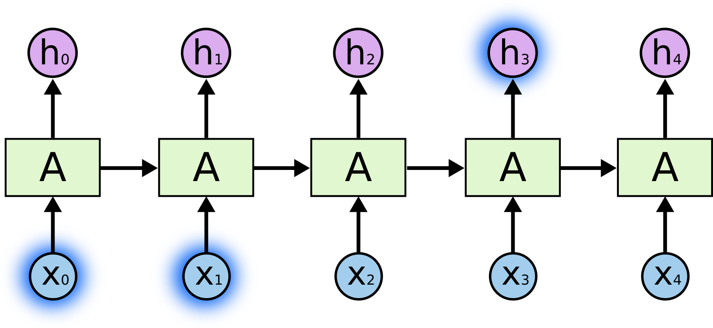
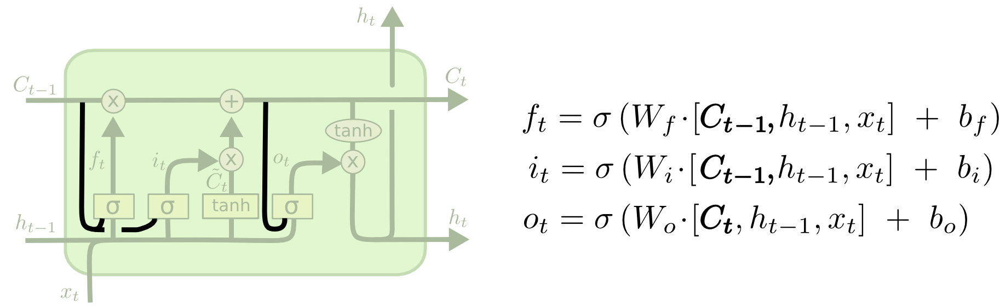

理解 LSTM 网络
Table of Contents
本文翻译自 Understanding LSTM Networks
递归神经网络
人类不会每次都从零来开始思考一个问题。正如你现在在阅读这篇文章时，你所理解的每个单词都将基于你已有的知识，你不需要从零基础来学习这篇文章。也就是说，人类的想法是有永久性的。
但传统的神经网络是无法做到这点的，这一直以来就是个大问题。比如说，如何根据一部电影某个时刻的影片，来判断这个时刻发生了什么事。使用传统的神经网络是无法解决这个问题的。
递归神经网络可以解决这类问题。它的网络结构是无限循环的，允许永久的保存之前的信息。

Figure 1: Recurrent Neural Networks have loops
上图中展示了一个循环的神经网络。 \(A\) 是神经网络的内层，输入 \(x_t\) 输出 \(h_t\) 。其输出还通过循环作为下一时刻的输入。
上诉的循环可能会让你觉得递归神经网络有点神秘，但其实它一点也不。它无非就是多个相同的网络连接在了一起，每个神经网络把自己处理的信息传递到下一个神经网络。

Figure 2: 递归神经网络展开
这种链式的神经网络揭示了递归神经网络的原理。过去这些年里，RNN 应用在各种各样的问题中，并且取得了不错的效果，例如：语音识别，语言建模，翻译，图像标注等。尤其是使用 LSTM 神经元的 RNN，其效果要比标准版的 RNN 好的多。几乎所有现在的递归神经网络结构都是基于 LSTM 的。
长期依赖带来的问题
RNN 的一大亮点就是，它可以将之前的信息联系到当前的任务中，比如，利用前几帧的画面来分析当前的画面。
有时，我们只需要当前时刻的信息表征当前时刻的任务。例如，一个语言模型试图基于当前输入的词汇预测下一个要输入的词汇。如果我们试图要去预测“the clouds are in the sky.”，则不需要任何进一步的上下文——很明显，下一个词将是“sky”。在这种情况下，相关信息和所需的信息之间的距离很小， RNN 可以学习使用过去的信息。

但在很多情况下，我们还是需要更多的上下文信息。例如，我们试图去预测“I grew up in France… I speak fluent French.”。当前的信息表明下一个单词可能是一种语言的名称，但我们仅仅依据当前句子，无法知道这种语言的名称，我们需要“France”这个上下文信息。相关信息和所需要的信息之间的距离变得很大了。
不幸的是，随着二者之间距离的变大，RNNs 不再适合学习这种信息。

从理论上讲，RNN 绝对有能力处理这种“长期依赖关系”。人们可以为简单的问题仔细挑选合适的参数来解决这个问题。但是在实践中，RNN 几乎无法学习下去。这篇文章解释了为什么普通的 RNN 无法学习长期依赖关系的问题。
幸运的是，LSTM 没有这个问题。
LSTM 网络
Long Short Term Memory networks —— 通常被称为“LSTMs” —— 是一种特殊的 RNN 网络，擅长学习“长期依赖关系”的问题。
LSTMs 设计的初衷就是为了解决“长期依赖关系”造成普通 RNN 无法有效训练这一问题的。所以，长时间记住信息正是 LSTM 擅长的功能，而非是 LSTM 很难去实现的。
每种 RNN 都有一个相同形式的链式网络结构。在标准 RNNs 中，其重复的网络结构非常简单：

Figure 5: 标准 RNN 中重复的网络结构
LSTMs 也有一个相同形式的链式网络结构，但是它的网络结构要相对复杂。

Figure 6: LSTM 中重复的网络结构
别急，接下来我们会一步一步解释 LSTM 网络的结构。现在，先来了解一下图片中符号的意思吧：

LSTMs 终极奥义
我们可以将 LSTM 看作是一个特殊的神经元。LSTM 最重要的是它的神经元状态（其实就是 LSTM 存储的记忆信息），那条贯穿图的顶部的线。
此神经元的状态有点像传送带，它沿着链条一直直线延伸，只有一些较小的线性相互作用。信息不加改变的流动非常容易。
LSTM 确实有向神经元添加或者删除信息的能力，这些功能由称为“门”的结构来管控。
门是一种选择性让信息通过的方式。它们由 Sigmod 函数和矩阵乘法组成。

Sigmoid 层输出范围为 0 到 1，用来表示某个输入有多少可以通过这个门。0 表示任何信息都不能通过，1 表示所有信息都可以通过。
一个 LSTM 神经元有三个门结构，用来控制神经元中的状态。
手把手教你理解 LSTM
第一步，我们需要理解在 LSTM 中那些信息需要被“遗忘”。这一决定在 LSTM 中由“forget gate （遗忘门）”来决定。此门以 \(h_{t-1}\) 和 \(x_t\) 作为输入，输出介于 0 和 1 之间。1 表示之前的信息完全采用（完全记忆），0 表示之前的信息完全不被采用。

下一步我们将要决定我们应该往神经元中存什么信息。首先，决定存入信息的多少是由“input gate （输入门）”决定的，之后输入的信息 \(\tilde{C_t}\) 通过一个 tanh 层输出得到。我们要存入的信息就是由上诉二者相乘的结果。

是时候去更新一下神经元状态（记忆）了。将上一时刻的状态 \(C_{t-1}\) 和 \(f_t\) 相乘，这就决定了我们要遗忘多少记忆。然后将 \(i_t\) 和 \(\tilde{C_t}\) 相乘，这决定了我们要记住多少新信息。将新旧信息相加，就是当前时刻的神经元状态了 \(C_t\) 。

最后，我们需要决定应该输出什么。这个输入将会在神经元状态的基础上，加以约束之后的结果。首先，决定应该输出多少信息是由“output gate （输出门）”决定的。然后，将神经元状态通过 tanh 层过滤，与输出门相乘，得到应该输出的结果。

LSTM 的变体
之前描述的是最普通的 LSTM。但不是所有 LSTMs 都是一样的。几乎每篇文章都有用到一个略有改动的 LSTM。
一个比较有名的变体是将神经元状态也当作 LSTM 的输入，称为“peephole connections”。

另一个变体是使用耦合的 forget gate 和 input gate。计算 \(C_t\) 时是同时作的决定（遗忘多少旧信息，记住多少新信息）。只会在需要记忆某些新信息时才忘记一些旧信息，只在需要忘记一些旧信息时才去记忆相应数量的新信息。

由 Cho 等人介绍的门控循环单元 GRU 是另一种 LSTM 变体。它将 forget gate 和 input gate 合并作为一个 update gate，合并了神经元状态和输出结果，生成的模型要比标准 LSTM 更简单，并且也变得越来越流行。